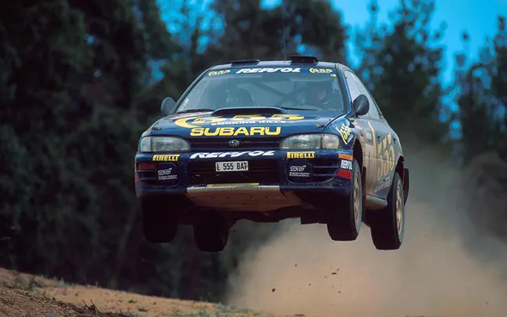
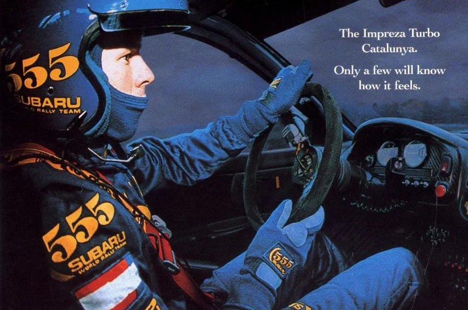

Удивительно, но на начальном этапе карьеры, отец Колина, Джимми совсем не помагал своему отпрыску. Колин начинал с низов. Однажды он и его друзья смастерили, сварили из всякого хлама и частей других машин, автомобиль способный ездить, и вдоволь на нем поотрывались. Это лишь усилило стремление Колина к гонкам. Интересный факт, когда-то Колин признался, что изначально вовсе не помышлял о том чтобы гоняться в ралли, все его внимание и желание было приковано к кольцевым гонкам. Но выпал случай и жажда скорости возобладала. В 1985 году Колин согласился провести ремонт, а именно заменить коробку передач на машине своего друга. В обмен за это он мог принять участие в ралли на этом автомобиле. Итог 14 место и это при том, что Колин вылетел с дороги в кювет. “Мы точно слетели бы где-нибудь, это был просто вопрос времени, но это было здорово, не было советов опытных, а результат был более чем хорошим, потому что я делал всё сам и с помощью парней из автоклуба”— вспоминал Колин Макрей.
Успех пришел к Колину в 1988 году, он стал чемпионом Шотландии. Для дальнейшего развития в 1989 году было решено сделать ставку на новый автомобиль Ford Sierra RS Cosworth и еще раз попытать счастья на ралли Швеции. И это себя оправдало. Он финишировал на 15 месте, и по ходу гонки показывал очень хорошие времена, в чистой борьбе опережая знаменитых раллистов, подвела лишь коробка передач. Затем последовали 2 победы в национальном чемпионате и уникальное 5! место по итогам ралли Новой Зеландии, и это окончательно убедило всех, что перед ними будущая звезда, и не помочь такому таланту просто грех.
15 сентября 2007 года Колин Макрей вместе со своим сыном Джонни, а также с другом своего сына Беном Порселли и со своим другом Грэмом Дунканом, разбился на своем вертолете недалеко от семейного поместья в Ланарке, Шотландия. Авария произошла в 16.10 по местному времени. Все кто находились в вертолете погибли на месте. Это была огромная потеря не только для семей погибших, но и для всего мира. Весь мир автоспорта потерял легенду, человека олицетворявшего собой ралли. Похороны произошли в узком семейном кругу. А затем 30 сентября произошла церемония прощания с великим чемпионом, которую посетило около 25 000 человек, пришли все от мала до велика, коллеги Колина по ралли, разнообразные знаменитые люди, все друзья, а также все кто хотел отдать должное заслугам Колина. У Колина осталась жена Алисон и дочка Холли. Во всем мире прошли церемонии памяти, автопробеги на машинах марки Субару, в честь Колина.